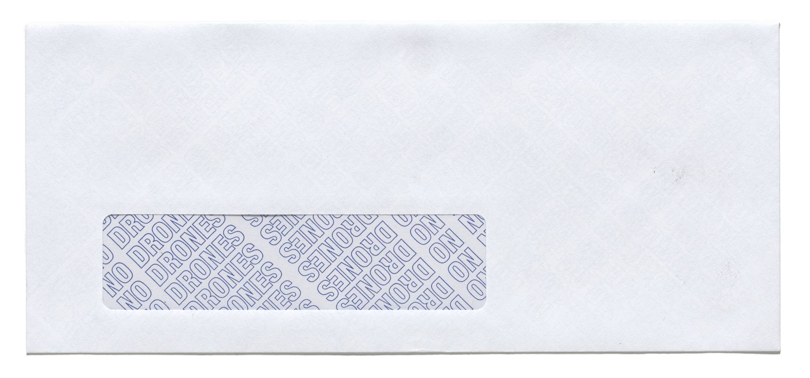
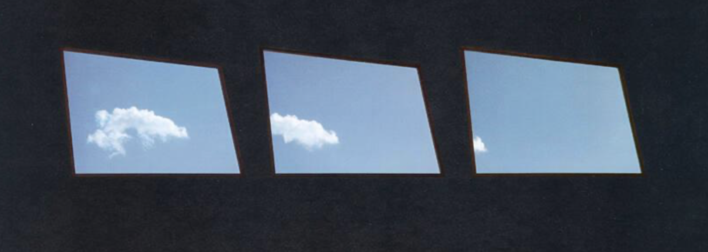

an exploration of this window,
with recomposed texts from
the wikipedia
article about windows
as analogies to this window.
'window story'
It is one of the few
windows
that could be
used as an exit.
16
[...] cannot be opened.
14
[...] while windows let
the user see outside,
there must be a way
to
maintain privacy [...]
in the inside
[...] movable [...]
coverings [...]
ensure privacy.
13
[...] with two parts [...]
that overlap slightly and
slide up and down
inside
the frame.
12
[...] slide horizontally
within the frame.
10
[...] with poor optical
properties
06
[...] many [...] have a
[...] screen [...] to keep
bugs out.
07
[...] an opening [...] that
allows the exchange of light
and may also
allow the
passage of sound and sometimes
air [...].
03
The window will usually
open initially to a restricted
position [...]
01

15
11
09
08
05

04
02